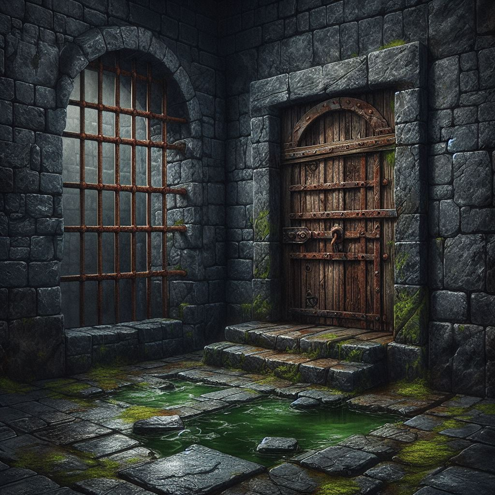

თავის ტკივილი გაღვიძებს. თვალების გახელისას ჩაბნელებულ დილეგს ხედავ, ბინძური, ნახევრად დატბორილი იატაკითა და ხის კარით. კუთხეში იატაკზე ზიხარ და ბევრს ვერაფერს ამჩნევ. შელოცვების წიგნი თან არ გაქვს. როგორ მოიქცევი?;
1. დავათვალიერებ დილეგს, იქნებ რამე ვიპოვო
2. შევეცდები რამის გახსენებას
3. დავიწყებ ყვირილს, იქნებ ვინმემ გაიგოს